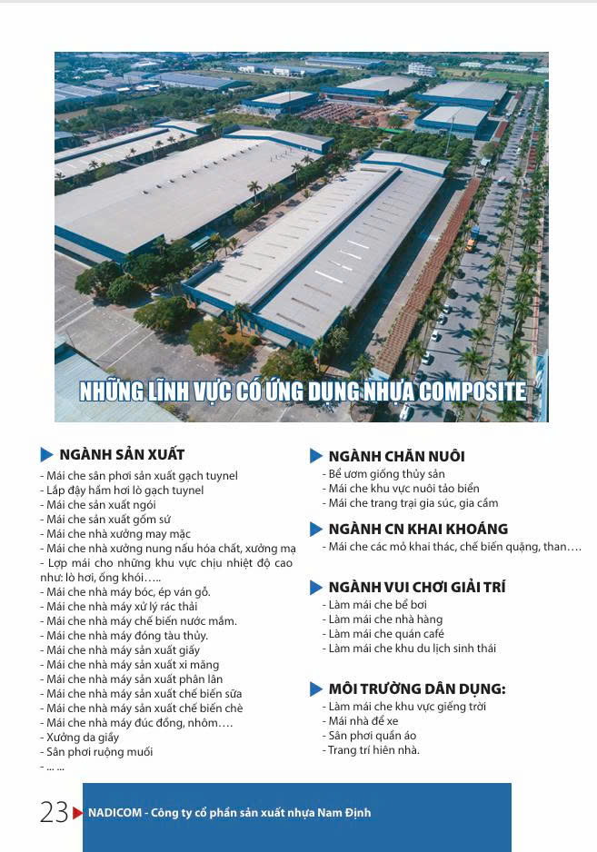
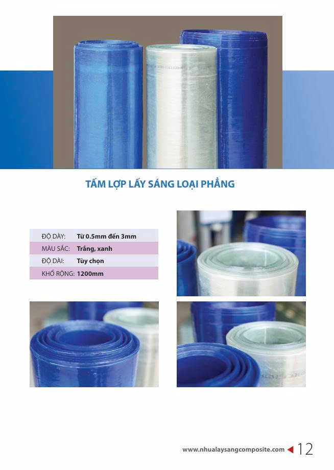
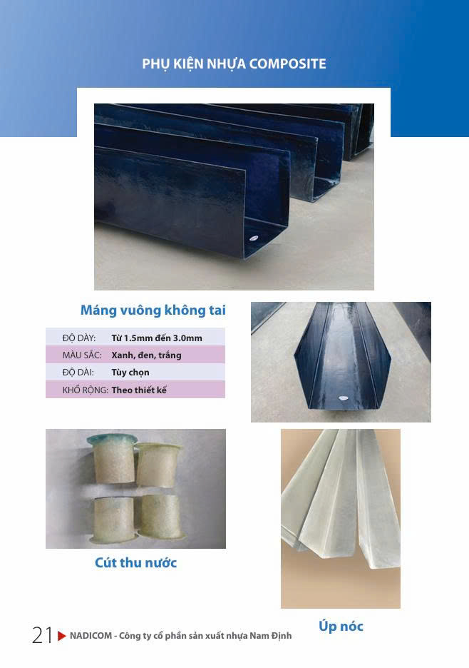
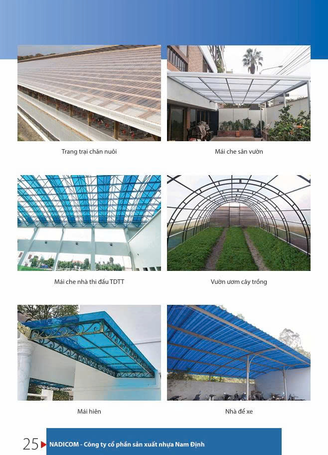

Kháng ăn mòn
Phù hợp môi trường ẩm, ven biển hoặc hạng mục có nguy cơ ăn mòn vật liệu kim loại.
Giải pháp tấm lợp composite gia cường sợi thủy tinh, đáp ứng nhu cầu lấy sáng, che phủ và kháng ăn mòn cho nhà xưởng, kho bãi, trang trại cùng các hạng mục công nghiệp.
Composite FRP là vật liệu nền nhựa polyester gia cường sợi thủy tinh, có thể cung ứng dạng lấy sáng hoặc không lấy sáng, dạng sóng, phẳng hay cuộn theo nhu cầu sử dụng.
HD LUXURY đồng hành ở vai trò tổng kho – phân phối – tư vấn – cung ứng vật liệu: tiếp nhận yêu cầu, đối chiếu mẫu sóng, lựa chọn quy cách, gửi mẫu và điều phối giao hàng theo công trình.

Mỗi dự án được đối chiếu theo nhu cầu ánh sáng, môi trường, biên dạng mái, độ dày và phụ kiện trước khi báo giá.
Phù hợp môi trường ẩm, ven biển hoặc hạng mục có nguy cơ ăn mòn vật liệu kim loại.
Hỗ trợ đưa ánh sáng ban ngày vào nhà xưởng, kho, trang trại và không gian sản xuất.
Thuận tiện vận chuyển, cắt ghép và phối hợp thi công trên nhiều hệ mái.
Có các dạng sóng dân dụng, công nghiệp, Seam Lock, Klip Lock, phẳng và cuộn.
Màu phổ biến gồm trắng, xanh; dòng che phủ có thêm đen, trắng sữa và ghi.
Máng vuông, máng bán nguyệt, úp nóc và cút thu nước được tư vấn theo thiết kế.

Phù hợp mái dân dụng, nhà xưởng nhỏ, mái phụ và khu vực cần lấy sáng xen kẽ.

Dành cho nhà xưởng, kho và mái công nghiệp cần độ cứng cùng khả năng lấy sáng ổn định.

Được đối chiếu biên dạng và phụ kiện kỹ thuật trước khi chốt quy cách cung ứng.

Cho mái kín, vách bao che, kho bãi và khu vực cần hạn chế ánh sáng trực tiếp.

Vật liệu bổ sung cho hạng mục che chắn, ốp phủ và gia công theo yêu cầu.

Giải pháp máng, úp nóc và thu nước được lựa chọn theo biên dạng và bản vẽ.
Thông số cuối cùng cần được xác nhận theo mẫu sóng, hệ mái, màu sắc, số lượng và điều kiện sử dụng thực tế của từng dự án.
Gửi quy cách cần tư vấnTập trung vào các hạng mục cần lấy sáng, che phủ, giảm nguy cơ ăn mòn và duy trì hiệu quả sử dụng lâu dài.

Mái chuồng trại, nhà kính, khu sơ chế và kho vật tư nông nghiệp.
Hạng mục cần hạn chế rỉ sét và giảm tác động ăn mòn.
Khu vực có độ ẩm cao, hơi muối hoặc vật liệu kim loại dễ xuống cấp.
Giải pháp lấy sáng hoặc che phủ theo kiến trúc công trình.
Xác định lấy sáng/không lấy sáng, mái/vách và môi trường sử dụng.
Đối chiếu mẫu sóng, độ dày, khổ rộng, màu sắc và phụ kiện.
Cung cấp mẫu vật liệu, catalogue và phương án kỹ thuật sơ bộ.
Điều phối giao hàng, hướng dẫn bốc xếp và hỗ trợ theo đúng vai trò phân phối, tư vấn và cung ứng vật liệu.
Xem đầy đủ cấu trúc vật liệu, danh mục lấy sáng/không lấy sáng, quy cách, phụ kiện, ứng dụng và quy trình tiếp nhận yêu cầu dự án.
Gửi ảnh hiện trạng, bản vẽ, mẫu sóng và địa điểm giao hàng để đội ngũ tư vấn quy cách phù hợp.